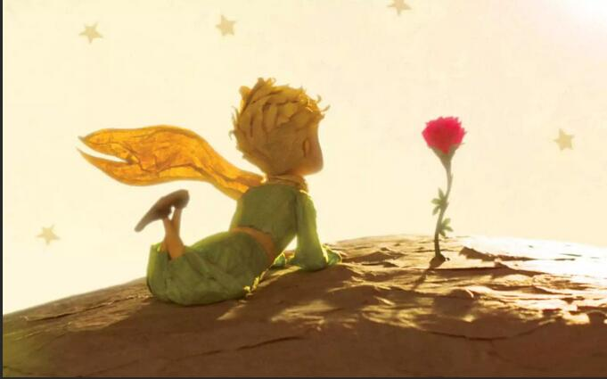

星空下的感悟
《小王子》读后感
在浩瀚的星空下，我翻开了《小王子》这本看似简单却蕴含深意的童话。圣-埃克苏佩里用他诗意的语言，为我们描绘了一个关于爱、责任与生命真谛的宇宙。
玫瑰与驯养：爱的辩证法
"正是你为你的玫瑰花费的时间，才使你的玫瑰变得如此重要。"
小王子与玫瑰的故事让我明白，爱不是一见钟情的浪漫，而是日复一日的浇灌。玫瑰的骄傲与脆弱，小王子的困惑与离开，都揭示了亲密关系中最深刻的真相：我们因付出而爱，而非因爱而付出。
狐狸关于"驯养"的教导更是点睛之笔。在这个快节奏的时代，我们习惯了即时的满足，却忘记了真正的连接需要时间的沉淀。狐狸说："你下午四点钟来，那么从三点钟起，我就开始感到幸福。"这种期待与等待的甜蜜，正是现代人逐渐遗失的情感体验。

星空与沙漠：孤独的馈赠
飞行员与小王子在沙漠中的相遇，是整部作品最富诗意的安排。在看似荒芜的沙漠中，他们找到了生命最珍贵的礼物——友谊与理解。这让我想到，也许正是孤独让我们能够真正看见彼此。
书中说："沙漠之所以美丽，是因为它在某个地方藏着一口井。"这句话道出了生活的本质——希望永远隐藏在困境之中。当我们学会在荒芜中寻找水源，在孤独中发现连接，生命便有了不同的意义。
大人与孩子：永恒的对话
"所有大人都曾经是孩子，虽然只有少数人记得。"
小王子对成人世界的观察既幽默又深刻。那些只关心数字、权力和虚荣的大人们，失去了孩童时期的想象力与纯真。这让我反思，在成长的过程中，我们是否也渐渐戴上了"大人"的面具，忘记了如何用心灵去看世界？
飞行员在书中扮演了一个特殊的角色——一个尚未完全变成大人的大人。他保留了画画的习惯和对星空的好奇，正是这种特质让他能够理解小王子。这给了我们希望：即使长大成人，我们也可以保留内心的童真。

告别与永恒：生命的循环
书的结尾，小王子选择让毒蛇咬他，以回到他的星球。这个看似悲伤的结局实则蕴含着深刻的哲理：有些离别是为了更好的重逢。飞行员从此在星空下寻找小王子的笑声，这种超越时空的连接，比物理的相聚更为永恒。
每次仰望星空，我都会想起小王子。也许在B-612小行星上，他正在照顾他的玫瑰，清理火山，欣赏日落。而在地球上，我们这些曾经是孩子的大人，依然可以从他的故事中汲取力量，在复杂的世界中保持简单，在功利的社会中守护纯真。